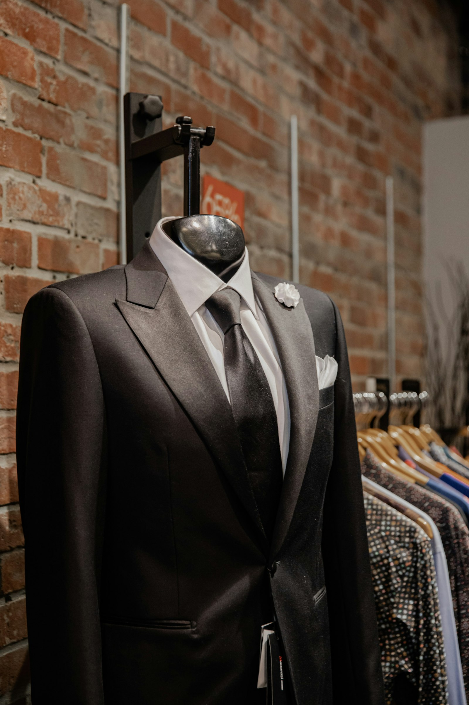

Suiting Advice
August 4, 2026
How to Choose Between Super 130s and Super 160s Wools
Understanding thread fineness, durability ratios, and finding the perfect weight for daily executive suiting.
Read Journal Article
Garment Care
July 28, 2026
5 Essential Rules for Caring for Bespoke Cashmere Coats
Proper steaming, natural horsehair brushing, cedar storage, and seasonal resting cycles to preserve virgin wools.
Read Journal Article
Wedding Guide
July 15, 2026
The Groom's Guide to Black Tie Tuxedo Etiquette
Peak lapel versus shawl collar, studs versus hidden plackets, and matching pocket square materials.
Read Journal Article
Style Analysis
July 02, 2026
Soft Neapolitan vs Structured British Suit Cut
Exploring sleevehead roping, unpadded shoulders, and how jacket canvas structure influences posture and comfort.
Read Journal Article
Bridal & Wedding
June 20, 2026
Key Checkpoints for Fitting Groomsmen Tuxedos
Coordination tips for wedding parties, sleeve length breaks, cummerbund sizing, and group measurement timelines.
Read Journal Article
Textile Science
June 10, 2026
How Fine Linen & Silk Weaves Perform in Tropical Climates
Why high-twist open weaves retain coolness without losing tailoring drape during summer heat and humidity.
Read Journal Article